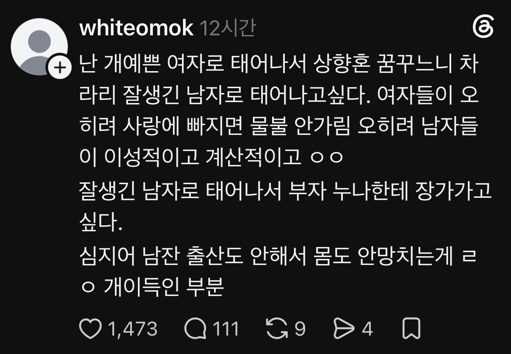
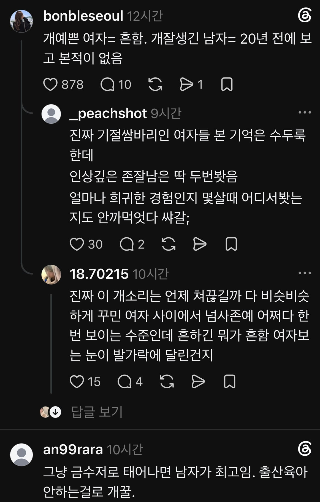
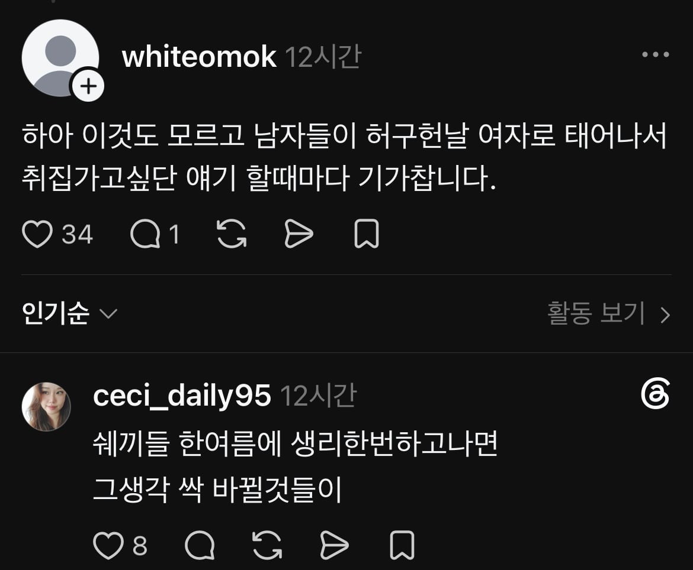
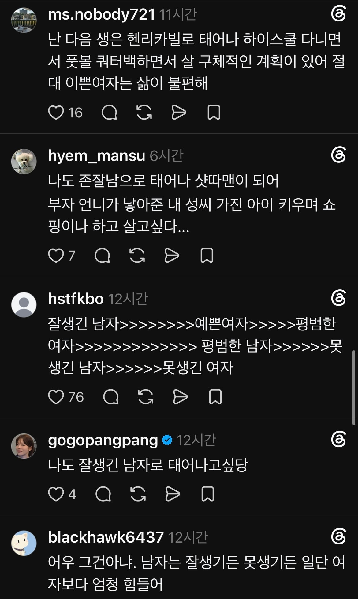

그냥 시발 망상회로인데 하고 싶은대로 쳐 하면 되지 이걸 가지고 왜 쳐 싸우고 있냐 ㅋㅋㅋㅋㅋ
대충 차은우원빈강동원vs장카설
이번 나솔봐라 ㅋㅋ 존잘남+좋은성격의 삶이 어떤지 볼수있음ㅋㅋ
고점은 존잘남이 높음
저점은 존예녀가 높고
쌩얼로는 압도적으로 한남이 한녀보다 미적으로 나은데 ㅋㅋㅋㅋㅋㅋㅋㅋㅋㅋ얼탱이가없노
여자들은 화장 스킬이 대부분 있어서 평균이 많이 높은데
남자들이 보통 화장을 안하다보니 평균이 좀 많이 무너져서 상위층이 미치긴했지
고대로부터 이기적으로 계산적인건 여성이 압도함
여초 직장만 봐도 ㅋㅋㅋㅋ
난 존예녀로 태어나서 20-30대 걸레처럼살고 퐁퐁하고싶다
씹존잘남 씹존예녀 흔녀 흔남 존못남 존못녀 순 아님?뒤에 둘은 좀 아리까리하네
근데 존예는 화장때문에 간간히 보이는데
존잘은 진짜진짜 보기 힘든거 맞음
근데 존예녀도 화장 지워보면 대부분 별로임. 이쁜여자가 잘생긴 남자보다 많이 보이는건 화장빨이
크다는 생각이 들더라
얼굴 '만' 이라고 치고 능력이 없다고 생각하면 남자보다는 여자가 훨씬 삶이 쉽지
근데 애초에 굳이 존잘 존예의 삶이 누가 더 낫냐 비교하는것도 웃기기도 하고
남자도 관리하고 분칠하면 존잘 비율이 올라가는데
여자만큼 노력가성비가 나오지 않지
여잔 외모만 잘가꿔도 평생 일안하고 살수있는 가능성이 생기고 업무가 잘풀리는데
흠...
팩트는 잘생긴 남자여도 결국은 책임에서 벗어날수 없다는거임 물론 섹스하고 연애만 하면 편하게 살겠지
존예녀는 손가락하나 까딱 안해도 되지만 존잘남은 데이트비용 지가 내고 코스짜고 리드하고 군대가고 가장역할 다 해야된다 알려진 존잘남중에 집도 차도 여자가 구해오고 일안하는 놈이 얼마나있냐?
왜냐면 얼굴을 조각도 하고 그림도 그려가며 예술을 하니까 남자보다 많아보이지 ㅋㅋㅋ
존잘이든 존예든 일단 나보다 능력좋은사람 만나서 편하게 살고싶다는 마인드부터가 이미 글렀음
남자로 태어나고싶지? 과연 니들이 존잘남으로 태어날수있을까 ㅅㅂ
화장빨은 존예가 아닌데 왜 존예라고 착각하는지 모르겠네ㅋㅋ
존예는 올리비아 핫세나 오드리 햇번처럼 보자마자 우왁 소리나야지 존예인거임
예쁜여자가 잘생긴남자보다 난이도는 쉬움
근데 고점은 잘생남이 높음
진짜 잘생기고 잘나가는 남자연예인들이 결혼 잘안하는데 이유가있음
여자가 편하지 잘생겼는데 무직ㅡ예쁜데 무직 생각해보면 됨
그리고 여자들 지들 외모 올려치기 좀 그만해야지 변장하고 가면쓴게 얼굴이 지들 얼굴인줄 알고있음
대체 뭔 근거로 존예는 많다고 하는 거임? ㅋㅋ
이게 나이 먹음이라는 변수를 고려해야함 할리우드 배우들도 미남배우는 나이 먹어도 이곳저곳에서 많이 불러주는데 여배우는 나이먹으면 정말 명배우 아니면 애매함 갑자기 서브스탠스가 생각나네.
여자가 평균외모 높긴함 화장버프 때문에...
결혼하고 슬슬 안꾸미기 시작하면 평준화되버리지
ㅋㅋ 화장 지우고 이야기하자 시발 ㅋㅋ
존잘남 돈 많은 누나랑 결혼 같은 소리는 개소리고 능력 껏 벌어야하는건 똑같음. 그냥 못생긴 나랑 비교하면 잘생겼다는 능력이 하나 더 추가된 꼴.
군대같이 존잘남도 아무리 날고 기어봤자 남자라 태생적인 난이도가 있음. 일례로 내가 살면서 본 가장 잘생긴 사람들도 다 직장인이었음.
여자가 더 편해보이긴 하는데 리스크는 더 크다고 본다. 스토커 같은 거 붙음 상대적으로 더 위험하거. 근데 또 남자는 고소당할 위험이 있네
ㅇㄱㄹㅇ
여자는 얼굴
남자는 얼굴 키 피지컬 골격 목소리
센스 직업 연봉까지가 외모임